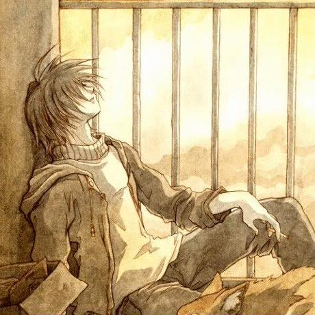

BẢN NHÁP
— đang biên soạn, chưa nghiệm thu. Giọng đọc là giọng máy (TTS) để xem thử, không phải giọng sản phẩm.
· chưa nghiệm thu · giọng máy (TTS)

/
INT1433
Lập trình mạng
Bài giảng
37
Mô phỏng
12
Sơ đồ
83
Mã & Ôn tập
35
Tìm bài, mô phỏng, sơ đồ, mã...
Ctrl K
↻ Phát lại
⏸ Tạm dừng
⟲ Căn lại
Esc
Định mức QĐ 2830 & Hồ sơ bàn giao (Nội bộ)
✕